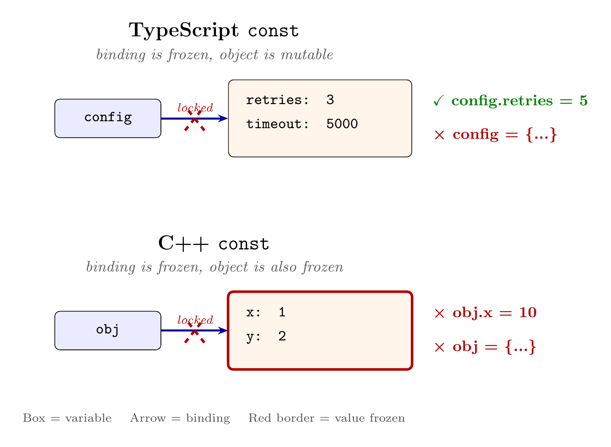

As a computational physics researcher, I've used many programming languages. When extreme performance is needed, Fortran, C, and C++ are the go-to choices; for quickly testing an idea or learning an algorithm, Python is the tool you reach for; and Julia, which balances performance with readability and maintainability, has a rapidly growing community. Each language has its strengths and occupies its niche.
作为一个计算物理的研究者，我使用过很多编程语言开发。需要极致性能的时候，Fortran、C、C++ 是不二之选；想快速验证一个想法、学习一个算法，Python 拿来就写；而兼具性能与可读性、易维护性的 Julia 社区也在迅速壮大。每种语言各有所长，也各安其位。
But things have changed recently. The rise of large language models and agents has opened a new possibility: building automated tools for your own research—letting agents run experiments, organize data, and even draft papers. When you explore the open-source community with this idea in mind, you'll notice something surprising: the most active AI agent frameworks like OpenClaw and OpenCode are almost all written in TypeScript.
但最近的情况有些不同。大语言模型和智能体的发展打开了一个新的可能：为自己的研究写一套自动化工具——让 agent 帮忙跑实验、整理数据、甚至起草论文。带着这个想法去看开源社区，会发现一件意外的事：OpenClaw、OpenCode 这些最活跃的 AI agent 框架，几乎都是用 TypeScript 写的。
This is no coincidence. An AI agent's workflow consists of constantly sending requests, waiting for responses, calling external tools, and deciding what to do next—essentially massive amounts of async I/O and service orchestration. TypeScript runs on Node.js, whose event-driven architecture has been optimized for exactly this kind of scenario for over a decade. Compared to C++, TS doesn't require manual memory management and offers much higher development efficiency; compared to Python, TS has a complete static type system that catches many errors at compile time in large projects, giving more confidence when refactoring. TS sits at the "glue layer" sweet spot, balancing development speed with engineering maintainability.
这不是巧合。AI agent 的工作模式是不停地发请求、等响应、调用外部工具、再决定下一步——本质上是大量异步 I/O 和服务编排。TypeScript 跑在 Node.js 上，而 Node.js 的事件驱动架构恰恰为这类场景优化了十几年。和 C++ 相比，TS 不需要手动管理内存，开发效率高得多；和 Python 相比，TS 有完整的静态类型系统，在大型项目里能在编译期就捕获大量错误，重构也更有信心。可以说，TS 在"胶水层"的位置上，兼顾了开发速度和工程可维护性。
This article takes a shortest-path approach. Part 1 covers environment setup and Hello World. Part 2 does a three-way comparison of TS/Python/C++ on variables, functions, and control flow—things every language has—to build basic syntax intuition. Part 3 focuses on TS-specific features: structural typing, union types, async/await, and generics—the things that actually trip you up when reading source code. Part 4 reads through the core loop of a real open-source AI agent project (NanoClaw) to tie everything together in an engineering context.
这篇文章尝试走一条最短路径。第一部分搞定环境安装和 Hello World。第二部分把变量、函数、控制流这些所有语言都有的东西用 TS/Python/C++ 三向对照快速过一遍，建立基本的语法直觉。第三部分重点讨论 TS 独有的特性——结构化类型、联合类型、async/await、泛型——这些才是读源码时真正会卡住的地方。第四部分拿一个真实的开源 AI agent 项目（NanoClaw）的核心循环来读，把前面学的东西在工程上下文里串起来。
Part 1: Quick Start — Installation & Hello World 第一部分：Quick Start——安装与 Hello World
Installing Node.js 安装 Node.js
TypeScript is a compiled language—TS source code is compiled into JavaScript, and then JS runs on Node.js. Node.js is to JS what CPython is to Python—it's the runtime environment. The TS compiler and toolchain themselves also run on Node.js. Installing Node.js also installs the package manager npm (analogous to Python's pip).
TypeScript 本身是一门编译型语言——TS 源码先编译成 JavaScript，然后 JS 跑在 Node.js 上。Node.js 之于 JS，就像 CPython 之于 Python——它是运行时环境。TS 的编译器和工具链本身也运行在 Node.js 上。安装 Node.js 会同时装好包管理器 npm（相当于 Python 的 pip）。
# Ubuntu / Debian
sudo apt update && sudo apt install -y nodejs npm
# macOS (with Homebrew)
brew install node
# Verify
node --version # v18.x or higher (v20+ preferred)
npm --version
Note: The Node.js version in Ubuntu/Debian system repositories is often outdated (e.g., Ubuntu 22.04 defaults to v12). If node --version shows less than 18, use nvm (Node Version Manager, similar to Python's pyenv) to install a newer version:
注意：Ubuntu/Debian 系统源里的 Node.js 版本经常偏旧（比如 Ubuntu 22.04 默认只有 v12）。如果 node --version 低于 18，用 nvm（Node Version Manager，类似 Python 的 pyenv）安装新版：
curl -o- https://raw.githubusercontent.com/nvm-sh/nvm/v0.40.3/install.sh | bash
nvm install 22 # Install Node.js 22
nvm use 22Running TypeScript 运行 TypeScript
TS code can't be executed directly by Node.js—it needs to be compiled to JavaScript first. But for day-to-day development you don't need to manually run the compiler then run the output. The tool tsx does it in one step—it compiles TS to JS in memory and immediately executes it. You never see intermediate files; the experience is like running .ts directly:
TS 代码不能直接被 Node.js 执行——需要先编译成 JavaScript。但日常开发不需要手动跑编译器再跑产物，用 tsx 这个工具可以一步到位——它在内存里把 TS 编译成 JS 然后立刻执行，你看不到中间文件，体验上就像直接运行 .ts：
# Run any .ts file directly (npx auto-downloads and caches tsx, no install needed)
npx tsx hello.tsHello World Hello World
Create hello.ts:
创建 hello.ts：
const greeting: string = "Hello from TypeScript!";
console.log(greeting); // console.log is like Python's print
const xs = [1, 2, 3];
const doubled = xs.map((x) => x * 2);
console.log(doubled); // [2, 4, 6]Run it:
运行：
npx tsx hello.ts
# Hello from TypeScript!
# [ 2, 4, 6 ]
That's it—write a .ts file, run it with npx tsx, no configuration needed. All examples in this article can be run this way.
就这么简单——写 .ts 文件，npx tsx 运行，不需要配置任何东西。后面文章里所有示例都可以这样跑。
Part 2: Quick Reference for Features Shared by TS, Python, and C++ 第二部分：TS、Python、C++ 共有特性速查
2.1 Variables and Type Declarations 2.1 变量与类型声明
Declaration Syntax 声明方式
The three languages differ greatly in how you declare a variable, and the difference stems from their attitudes toward type checking.
三种语言在"怎么声明一个变量"这件事上差异很大，差异的根源是它们对类型检查的态度。
C++'s core syntax has just one pattern: type varname (auto lets the compiler fill in the type). The type is determined at compile time and cannot change afterward.
C++ 的核心语法只有一种：类型 变量名（auto 让编译器帮你填类型）。类型在编译时确定，之后不能变。
Python goes further—there's not even a declaration keyword; you just assign. This isn't because Python's type inference is more powerful, but because Python doesn't check types before runtime at all. Python is dynamically typed: type information is attached to values, not variables. A variable is just a name tag that can be stuck on any object:
Python 更极端——连声明关键字都没有，直接赋值就行。这不是因为 Python 的类型推导更厉害，而是因为 Python 根本不在运行前检查类型。Python 是动态类型：类型信息附在值上面，不在变量上面。变量只是一个名字标签，贴在哪个对象上都行：
x = 3 # x points to an int object
x = "hello" # x now points to a str object, perfectly legal
x + 1 # TypeError only at runtimeThe cost: type errors hide deeper, and large projects become hard to maintain.
代价是：类型错误藏得更深，大项目难以维护。
TS sits between the two—variables are declared with const / let, and type annotations are optional. If you write an annotation, the compiler checks it; if you don't, the compiler infers the type at compile time from the right-hand side, and the inferred type is then fixed. This is similar to C++'s auto, but stronger than Python's type hints (x: int = 3)—Python's hints are completely ignored at runtime, while TS's inference actually enforces checks at compile time.
TS 介于两者之间——用关键字 const / let 声明变量，类型标注可选。写了标注，编译器检查；不写，编译器根据右侧的值在编译时推导出类型，推导完就固定了。这和 C++ 的 auto 很像，但比 Python 的类型提示（x: int = 3）强——Python 的类型提示运行时完全不管，TS 的推导在编译期真正做检查。
| TS | Python | C++ |
|---|---|---|
const n: number = 3; | n = 3 | const int n = 3; |
let name = "alice"; | name = "alice" | auto name = std::string("alice"); |
let x: number; x = 1.2; | x = 1.2 | double x; x = 1.2; |
const and let: Can a Variable Be Reassigned?
const 和 let：变量能不能"换指向"
In day-to-day TS code, you only use two declaration keywords: const and let. The only difference: const variables cannot be reassigned; let variables can.
TS 日常只用两个声明关键字：const 和 let。区别只有一点：const 声明的变量不能重新赋值，let 可以。
The simple case—primitive types like numbers and strings:
先看简单的情况——数字、字符串这些基本类型：
const n = 3;
// n = 4; // Error: const doesn't allow reassignment
let x = 1;
x = 2; // OK: let allows reassignment
This is identical to C++'s const int n = 3, no surprises.
这和 C++ 的 const int n = 3 完全一致，没有任何意外。
Now objects. Here's a common misconception for people coming from C++. Think of a variable as an arrow: the variable name is the starting point, the value is the target. const means this arrow cannot point to a different target—but you can freely modify the contents of the object the arrow points to:
再看对象。这里有一个从 C++ 过来容易误解的地方。把变量想象成一根箭头：变量名是箭头的起点，值是箭头指向的目标。const 的意思是这根箭头不能改指别的目标——但箭头指向的那个对象本身，你可以随便改它的内容：
const config = { retries: 3, timeout: 5000 };
config.retries = 5; // OK: modifying the object's internal fields
config.timeout = 10000; // OK: same
// config = { retries: 1, timeout: 2000 }; // Error: can't point config to another object
This differs from C++'s const. By analogy: TS's const forbids rebinding the variable name; C++'s const typically forbids modifying the object's content through that name.
这跟 C++ 的 const 不同。类比层面：TS 的 const 禁止重新绑定变量名，C++ 的 const 通常用于禁止通过该名字修改对象内容。

const freezes the binding (arrow), not the object; C++ const freezes both.
TS 的 const 冻结的是绑定（箭头），不是对象本身；C++ 的 const 两者都冻结。
In Python terms, all Python variables are like let—any name can be reassigned at any time. Python's mutability/immutability is at the object level (list is mutable, tuple is immutable), unrelated to variable declaration.
类比 Python 的话，Python 所有变量都像 let——任何名字都可以随时重新赋值，没有办法"锁住"一个名字。Python 的可变/不可变发生在对象层面（list 可变、tuple 不可变），跟变量声明无关。
Default to const, switch to let only when you need reassignment. This is the standard TS community convention.
默认用 const，需要重新赋值时才换 let。这是 TS 社区的标准约定。
Scope: Where Variables Are Visible 作用域：变量在哪里可见
Scope determines where in the code a variable can be accessed.
作用域决定一个变量在代码的哪个范围内可以访问。
const and let are block-scoped: variables are visible only within the nearest {} braces, and disappear once you leave them. This is identical to C++:
const 和 let 是块作用域：变量只在最近的 {} 花括号内可见，出了花括号就消失。这和 C++ 完全一致：
if (true) {
const x = 1;
console.log(x); // OK
}
// console.log(x); // Error: x doesn't exist—already left the {} scope
TS also has a legacy var keyword with function scope: the variable is visible throughout the entire function, ignoring {}. This causes real bugs. Consider this example where you want to print 0, 1, 2 in sequence:
TS 还有一个历史遗留的 var 关键字，它是函数作用域：变量在整个函数内都可见，无视 {}。这会造成真实的 bug。看这个例子——你想依次打印 0, 1, 2：
for (var i = 0; i < 3; i++) {
setTimeout(() => console.log(i), 100);
}
// Expected: 0, 1, 2
// Actual: 3, 3, 3Why all 3s? Two steps to understand this bug.
为什么全是 3？要理解这个 bug 需要两步。
Step 1: setTimeout(() => console.log(i), 100) means "execute console.log(i) after 100 milliseconds." It doesn't print immediately; it just puts the callback into a waiting queue. So the loop completes in an instant, pushing one callback per iteration, printing nothing yet.
第一步：setTimeout(() => console.log(i), 100) 的意思是"100 毫秒之后再执行 console.log(i)"。它不会立刻打印，只是把回调函数放进一个等待队列。所以循环三轮瞬间跑完，每轮只是往队列里塞了一个回调，此时什么都没打印。
Step 2: What is i's value when the callbacks execute? With var, there is only one i variable for the entire function. The callbacks don't capture i's value at the time, but a reference to the variable i itself. All three callbacks point to the same i. By the time the callbacks execute 100ms later, the loop has finished and i is already 3.
第二步：回调执行时 i 的值是多少？用 var 声明时，整个函数只有一个 i 变量。注意回调里存的不是 i 当时的值，而是对变量 i 本身的引用。三个回调都指向同一个 i。等 100 毫秒后回调执行时，循环早跑完了，i 已经是 3，所以三个回调都打印 3。
Switching to let fixes it:
换成 let 就对了：
for (let i = 0; i < 3; i++) {
setTimeout(() => console.log(i), 100);
}
// Output: 0, 1, 2
let is block-scoped, so each iteration creates a new i—the three callbacks each capture a different variable, each retaining its own iteration's value.
let 是块作用域，循环的每一轮创建一个新的 i——三个回调各自捕获的是不同的变量，各自保留了自己那轮的值。
Python has exactly the same pitfall:
Python 也有完全一样的坑：
funcs = []
for i in range(3):
funcs.append(lambda: print(i))
for f in funcs:
f()
# Output: 2, 2, 2 (not 0, 1, 2)
Same reason—Python's for loop has only one i, and lambdas capture a reference to the variable, not its value.
原因一样——Python 的 for 循环里 i 也只有一个，lambda 捕获的是变量的引用而非值。
The conclusion is simple: never use var. Modern TS/JS code uses only const and let.
结论很简单：永远不要用 var。现代 TS/JS 代码只用 const 和 let。
Data Types 数据类型
What's more interesting is the number of primitive types. C++ ranges from char to long long, with signed/unsigned combinations, giving many primitive types—because you need precise control over how many bytes each variable occupies. Python simplifies dramatically: the common scalar types are just int, float, complex, bool, str, bytes, and None.
更有意思的是基本类型的数量。C++ 从 char 到 long long，加上 signed/unsigned 排列组合，基本类型非常多——因为你需要精确控制每个变量占几个字节。Python 大幅简化：常用的标量类型就是 int、float、complex、bool、str、bytes、None。
TS also has 7 primitive types, but the classification is completely different from Python:
TS 的原始类型也是 7 种，但划分方式和 Python 完全不同：
| TS Type | Description | Python Equivalent | C++ Equivalent |
|---|---|---|---|
number | All numbers (64-bit float)所有数字（64 位浮点） | int + float | double |
string | Strings字符串 | str | std::string |
boolean | true / false | bool | bool |
null | Explicit "empty"显式的"空" | None | nullptr |
undefined | Unassigned / missing property / no return value未赋值 / 缺失属性 / 无返回值 | (no equivalent)（无对应） | (no equivalent)（无对应） |
bigint | Arbitrary precision integers任意精度整数 | int | (no built-in)（无内置） |
symbol | Unique identifiers唯一标识符 | (no equivalent)（无对应） | (no equivalent)（无对应） |
The most notable point: TS doesn't distinguish between integers and floats. 1 and 1.5 are both number, uniformly represented as IEEE-754 double precision underneath. This takes some getting used to for people from a scientific computing background—no int vs. double distinction.
最显眼的一点：TS 不区分整数和浮点。1 和 1.5 都是 number，底层统一用 IEEE-754 双精度浮点表示。这对科学计算背景的人来说需要适应——没有 int 和 double 的区分。
number's range: as a 64-bit float, its maximum value is about $1.8 \times 10^{308}$ (Number.MAX_VALUE), but integer precision is only guaranteed within $\pm(2^{53}-1)$, roughly $\pm 9 \times 10^{15}$ (Number.MAX_SAFE_INTEGER). Beyond this range, the gap between adjacent integers exceeds 1, leading to "adding 1 equals nothing":
number 的范围：作为 64 位浮点，它能表示的最大值约为 $1.8 \times 10^{308}$（Number.MAX_VALUE），但整数精度只在 $\pm(2^{53}-1)$ 范围内有保证，也就是大约 $\pm 9 \times 10^{15}$（Number.MAX_SAFE_INTEGER）。超过这个范围，相邻整数之间的间隔大于 1，就会出现"加 1 等于没加"的情况：
console.log(9007199254740992 === 9007199254740993); // true! Two different numbers considered equal
That's why bigint exists: when you need integers beyond the safe range (e.g., 64-bit database primary keys, cryptographic calculations). The syntax uses an n suffix, and bigint cannot be mixed with number in arithmetic:
这就是 bigint 存在的理由：当你需要处理超出安全范围的整数（比如数据库的 64 位主键、加密计算），就要用 bigint。写法是字面量加 n 后缀，而且 bigint 不能和 number 直接混算：
const big = 9007199254740993n; // bigint literal
// big + 1 // Error: can't mix bigint and number
big + 1n // OK: both are bigint
TS also has two "empty" values: null and undefined. null means "explicitly saying there's no value here"; undefined is broader—a declared but unassigned variable is undefined, accessing a nonexistent property returns undefined, and a function with no return value returns undefined. With strictNullChecks enabled (a TS compiler config that modern projects basically always enable), they can't be used interchangeably: a variable declared as string can't be assigned null or undefined—you must explicitly write string | null or string | undefined. The common x?: T syntax in source code is shorthand for x: T | undefined.
TS 还有两个"空"值需要注意：null 和 undefined。null 表示"显式地说这里没有值"，undefined 则更宽泛——变量声明了没赋值是 undefined，访问对象上不存在的属性也是 undefined，函数没有返回值也是 undefined。在开启 strictNullChecks（这是 TS 编译器配置项，现代项目基本都开）的情况下，它们不能随意混用：一个声明为 string 的变量不能赋值 null 或 undefined，必须显式写成 string | null 或 string | undefined。读源码时常见的 x?: T 语法，实际上就是 x: T | undefined 的简写。
2.2 Functions 2.2 函数
Basic Syntax 基本写法
TS has two syntaxes for defining functions. The traditional one maps directly to C++ / Python:
TS 有两种定义函数的语法。传统写法和 C++ / Python 的结构一一对应：
// TS
function square(x: number): number {
return x * x;
}
// With default parameters
function add(x: number, y: number = 1): number {
return x + y;
}# Python equivalent
def square(x: float) -> float:
return x * x
def add(x: float, y: float = 1) -> float:
return x + y// C++ equivalent
double square(double x) { return x * x; }
double add(double x, double y = 1) { return x + y; }
The second is the arrow function (=>), which removes the function keyword and connects parameters to the body with =>:
第二种是箭头函数（=>），把 function 关键字去掉，参数和函数体之间用 => 连接：
const square = (x: number): number => x * x;
const add = (x: number, y: number = 1): number => x + y;
Arrow functions aren't a new concept—they're an enhanced version of Python's lambda and C++ lambdas. The difference is that Python's lambda can only be a single expression, while TS arrow functions can have full multi-line bodies:
箭头函数不是新概念——它就是 Python 的 lambda 和 C++ 的 lambda 的加强版。区别在于 Python 的 lambda 只能写单行表达式，而 TS 的箭头函数可以写完整的多行函数体：
const describe = (x: number): string => {
if (x > 0) return "positive";
if (x < 0) return "negative";
return "zero";
};
Both syntaxes are functionally identical, but arrow functions are more common in practice. The reason is simple—brevity. Callbacks appear extremely frequently in code (map, filter, setTimeout, event listeners...), and arrow functions fit on one line:
两种写法功能完全相同，但实际代码里箭头函数更常见。原因很简单——短。回调在代码里出现的频率极高（map、filter、setTimeout、事件监听……），用箭头函数一行就写完：
// Arrow function: one line
xs.map((x) => x * 2);
// function syntax: same thing, much more to type
xs.map(function(x) { return x * 2; });
Beyond brevity, arrow functions have another important difference: they don't bind their own this, instead inheriting this from the enclosing scope. Functions written with function get their own this (depending on how they're called), which is a classic source of bugs in class methods and event listeners. Arrow functions automatically avoid this problem.
除了更短之外，箭头函数还有一个重要区别：它不绑定自己的 this，而是继承外层作用域的 this。用 function 写的回调会拿到自己的 this（取决于调用方式），这在类方法和事件监听里是经典的坑源。箭头函数自动避开这个问题。
So the community convention is: use arrow functions for callbacks, function for standalone named functions.
所以社区形成了习惯：回调用箭头函数，独立的命名函数用 function。
Callbacks 回调
A callback is simply passing a function as an argument to another function. The passed-in function isn't executed immediately—the receiver decides when and how to call it.
回调（callback）就是把一个函数当参数传给另一个函数。被传进去的那个函数不会立刻执行，而是由接收方决定什么时候、怎么调用它。
The most everyday usage is the array methods map, filter, and reduce. Taking map as an example—it calls your function on each element and collects the return values into a new array:
更日常的用法是数组的 map、filter、reduce 方法。拿 map 举例——它对数组的每个元素调用你传入的函数，把返回值收集成一个新数组：
const xs = [1, 2, 3];
const ys = xs.map((v) => v * 2);
// map calls: (1) => 1*2, (2) => 2*2, (3) => 3*2
console.log(ys); // [2, 4, 6]This does the same thing as Python's list comprehension: ys = [v * 2 for v in xs].
这和 Python 列表推导做的事一样：ys = [v * 2 for v in xs]。
filter selects—elements where the callback returns true are kept, false are discarded:
filter 筛选——回调返回 true 的元素留下，false 的丢弃：
const xs = [1, 2, 3, 4, 5];
const evens = xs.filter((v) => v % 2 === 0);
console.log(evens); // [2, 4]
reduce "folds" the entire array into a single value. It takes two arguments: an accumulator function and an initial value:
reduce 把整个数组"折叠"成一个值。它接受两个参数：一个累积函数和一个初始值：
const xs = [1, 2, 3, 4, 5];
const sum = xs.reduce((acc, v) => acc + v, 0);
console.log(sum); // 15
Breaking down xs.reduce((acc, v) => acc + v, 0)—0 is the initial value, each step adds the current element to the accumulator:
拆开看 xs.reduce((acc, v) => acc + v, 0) 的执行过程——0 是初始值，每一步拿累积值加上当前元素：
Step 1: acc=0, v=1 → 0+1 = 1
Step 2: acc=1, v=2 → 1+2 = 3
Step 3: acc=3, v=3 → 3+3 = 6
Step 4: acc=6, v=4 → 6+4 = 10
Step 5: acc=10, v=5 → 10+5 = 15 ← final result
Python equivalents: evens = [v for v in xs if v % 2 == 0], sum(xs).
Python 对照：evens = [v for v in xs if v % 2 == 0]，sum(xs)。
These methods appear extremely frequently in source code. Just remember map (transform), filter (select), and reduce (accumulate).
这几个方法在源码里出现频率极高，认住 map（变换）、filter（筛选）、reduce（累积）这三个名字就够了。
2.3 Control Flow and Loops 2.3 控制流与循环
if / else and while syntax is almost identical to C++, except conditions must have parentheses (Python doesn't):
if / else 和 while 的语法跟 C++ 几乎一样，只是条件必须加圆括号（Python 不用）：
const x = 3;
if (x > 0) {
console.log("positive");
} else if (x === 0) {
console.log("zero");
} else {
console.log("negative");
}
To iterate over arrays, use for...of, which gives you element values directly, just like Python's for v in arr:
遍历数组用 for...of，直接拿到元素值，和 Python 的 for v in arr 一样直觉：
const names = ["alice", "bob", "carol"];
for (const name of names) {
console.log(name); // alice, bob, carol
}# Python equivalent
for name in names:
print(name)// C++ equivalent
for (const auto& name : names) {
std::cout << name << "\n";
}
Note: TS also has a similar-looking for...in—it iterates over enumerable property key names (including inherited ones), not values. Used on arrays, you get string indices, which is almost never what you want:
注意 TS 还有一个长得很像的 for...in——它遍历的是可枚举属性的键名（包括从原型链继承来的），而非值。用在数组上会拿到字符串形式的索引，几乎不会是你想要的：
const arr = [10, 20, 30];
for (const k in arr) {
console.log(k); // "0", "1", "2" (string indices, not values!)
}
for (const v of arr) {
console.log(v); // 10, 20, 30 (this is what you want)
}Simple rule: always use for...of for arrays. For iterating over object properties, Object.entries(obj) returns [key, value] pairs that can be used with for...of directly.
规则很简单：遍历数组永远用 for...of。遍历对象属性则更常用 Object.entries(obj)，它返回 [key, value] 对的数组，可以直接 for...of。
2.4 Data Structures 2.4 数据结构
TS's four core data structures map one-to-one with Python:
TS 的四种核心数据结构和 Python 一一对应：
| TS | Python | C++ |
|---|---|---|
Array | list | std::vector |
Map | dict | std::unordered_map |
Set | set | std::set |
Object literal {}对象字面量 {} | dict | struct |
Arrays:
数组：
const xs = [1, 2, 3];
xs.push(4); // append to end → [1, 2, 3, 4], like Python's append
xs.pop(); // pop from end → [1, 2, 3]
console.log(xs[0]); // 1, index access same as Python/C++
console.log(xs.length); // 3, like Python's len(xs)Map (dictionary)—note that TS's Map iterates in insertion order, more like Python 3.7+'s dict than C++'s std::map (sorted by key):
Map（字典）——注意 TS 的 Map 按插入顺序迭代，更像 Python 3.7+ 的 dict，而不是 C++ 的 std::map（按键排序）：
const scores = new Map<string, number>();
scores.set("alice", 95); // Python: scores["alice"] = 95
scores.set("bob", 87);
console.log(scores.get("alice")); // 95
console.log(scores.has("carol")); // false
for (const [name, score] of scores) {
console.log(name, score); // Python: for name, score in scores.items()
}
Note that scores.get("alice") returns number | undefined—if the key doesn't exist, it returns undefined. So the robust way is to add a fallback: scores.get("alice") ?? 0 (?? means "if the left side is null/undefined, use the right side").
注意 scores.get("alice") 的返回类型是 number | undefined——如果键不存在就返回 undefined。所以严谨写法要先判空：scores.get("alice") ?? 0（?? 是"如果左边是 null/undefined 就用右边的值"）。
Object literals—the most frequently appearing data structure in TS code. Essentially a fixed-structure dictionary. Note that object keys can only be string or symbol; if you need arbitrary types as keys (e.g., objects), use Map:
对象字面量——这是 TS 代码里出现频率最高的数据结构，本质上就是一个固定结构的字典。注意对象的键只能是 string 或 symbol；如果你需要用任意类型当键（比如用对象做键），应该用 Map：
const msg = { jid: "tg:123", text: "hello", retry: 3 };
console.log(msg.jid); // "tg:123", dot notation
console.log(msg["text"]); // "hello", bracket notationTS has a very convenient syntax called destructuring assignment—extracting multiple fields from an object into independent variables at once:
TS 还有一个很方便的语法叫解构赋值——一次把对象里的多个字段拆成独立变量：
const { jid, text, retry } = msg;
// Equivalent to:
// const jid = msg.jid;
// const text = msg.text;
// const retry = msg.retry;
console.log(jid); // "tg:123"
// Arrays can be destructured too
const [first, second] = [10, 20, 30];
console.log(first); // 10
console.log(second); // 20Destructuring is everywhere in source code—just recognize the pattern.
解构在源码里到处都是，认住这个模式就好。
2.5 Mini Script Exercise: Read File + Process Data + Output Result 2.5 小脚本练习：读文件 + 处理数据 + 输出结果
The most common workflow in scientific computing—"read data, compute statistics, output result"—translates directly to TS. The only change is that file I/O uses Node.js's fs module. This code reads a CSV file, extracts the second column, and computes mean and standard deviation:
科学计算里最常见的"读数据、算统计量、输出结果"这条流程，在 TS 里可以直接复用，只是文件 I/O 的 API 换成了 Node.js 的 fs 模块。下面这段代码读一个 CSV 文件，取第二列的数值，算均值和标准差：
import { readFileSync } from "node:fs";
const csv = readFileSync("data.csv", "utf8").trim();
const values = csv
.split(/\r?\n/)
.slice(1)
.map((line) => Number(line.split(",")[1]));
const n = values.length;
const mean = values.reduce((a, b) => a + b, 0) / n;
const variance = values.reduce((s, x) => s + (x - mean) ** 2, 0) / n;
const std = Math.sqrt(variance);
console.log({ n, mean, std });Compare with the Python version—the logic is almost identical, just different API names:
对照一下 Python 版本，你会发现思路几乎一模一样，只是 API 名字不同：
import csv, math
with open("data.csv", newline="", encoding="utf-8") as f:
rows = list(csv.reader(f))[1:]
values = [float(r[1]) for r in rows]
n = len(values)
mean = sum(values) / n
var = sum((x - mean) ** 2 for x in values) / n
std = math.sqrt(var)
print({"n": n, "mean": mean, "std": std})Part 3: TypeScript-Specific Features 第三部分：TypeScript 特有特性
By now you should have a feel for TS's basic syntax. What follows are the key features that distinguish TS from Python and C++. These appear frequently and understanding them is essential for reading code fluently.
到这里，你应该对 TS 的基本语法有了感觉。下面要讲的是 TS 区别于 Python 和 C++ 的几个关键特性。这些特性高频出现，搞懂它们才能顺畅地读代码。
Each subsection includes a minimal runnable example—running them yourself helps build intuition.
每个小节都附了一个可运行的最小例子，建议实际跑一遍加深印象。
3.1 Type System Basics 3.1 类型系统基础
TS has a keyword type that lets you name a "shape of data." Similar to C++'s typedef or Python's TypeAlias, but TS goes further—it supports literal types that can restrict a variable's possible values to specific strings or numbers.
TS 有一个关键字 type，可以给"数据的形状"起一个名字。这和 C++ 的 typedef 或 Python 的 TypeAlias 类似，但 TS 走得更远——它支持字面量类型，可以把一个变量的取值范围精确限制到几个具体的字符串或数字。
type Role = "user" | "assistant";
type Message = {
role: Role;
content: string;
};
const m1: Message = { role: "user", content: "hello" };
console.log(m1);
// const m2: Message = { role: "system", content: "x" }; // Compile-time error
The Role type above only allows the values "user" and "assistant". If you write "system", the compiler reports an error immediately—no waiting until runtime.
上面的 Role 类型只允许 "user" 和 "assistant" 两个值。如果你写了 "system"，编译器直接就会报错——不用等到运行时才发现问题。
Another important concept is structural typing: TS determines type compatibility by looking at field structure, not names. This is completely different from C++'s nominal typing (same name = same type), but somewhat similar to Python's duck typing—plus compile-time checking.
另一个重要概念是结构化类型（structural typing）：TS 判断两个类型是否兼容，看的不是名字，而是字段结构是否匹配。这和 C++ 的 nominal typing（同名才算同类型）完全不同，倒是和 Python 的 duck typing 有几分神似，不过多了编译期检查。
type A = { x: number; y: number };
type B = { x: number; y: number };
const a: A = { x: 1, y: 2 };
const b: B = a; // Same field shape, assignable
console.log(b);A common "gotcha": when assigning directly with an object literal, TS performs excess property checking—extra fields cause an error. But if you assign through a variable first, it doesn't:
有一个常见的"坑"：直接用对象字面量赋值时，TS 会做多余属性检查（excess property check），多出来的字段会报错；但如果先赋给一个变量再传，就不报错了：
// const c: A = { x: 1, y: 2, z: 3 }; // Error: excess property z in literal
const tmp = { x: 1, y: 2, z: 3 };
const d: A = tmp; // OK: no excess property check through variable
Why this design? The motivations differ for the two cases: a literal with extra fields is almost certainly a bug (e.g., a typo like timoeut instead of timeout); but a variable with extra fields is often legitimate—an object with { x, y, z } passed to a function that only needs { x, y } makes perfect sense.
为什么要这样设计？两种情况动机不同：字面量多了字段，几乎肯定是 bug（比如把 timeout 拼成 timoeut）；变量多了字段，往往是合理的——一个带有 { x, y, z } 的对象传给只需要 { x, y } 的函数，完全说得通。
3.2 Interfaces 3.2 接口（Interface）
Suppose you want to write a generic ODE solver framework where runOnce can accept Euler, RK4, or any future integration method without modifying runOnce itself. In C++, you'd typically define a pure virtual base class; in Python, you'd use abc.ABC or Protocol. TS uses interfaces—declaring "what fields and methods this object must have," with the compiler enforcing the contract:
假设要写一个通用的 ODE 求解器框架，希望 runOnce 函数能接受 Euler、RK4 或任何将来新增的积分方法，而不需要改 runOnce 本身的代码。在 C++ 里，通常的做法是定义一个纯虚基类；Python 里可以用 abc.ABC 或 Protocol。TS 的做法是接口（interface）——声明"这个对象必须有哪些字段和方法"，编译器负责检查：
interface Integrator {
step(x: number, dt: number): number;
}
class Euler implements Integrator {
step(x: number, dt: number): number {
return x + dt * (-0.5 * x);
}
}
function runOnce(method: Integrator, x0: number): number {
return method.step(x0, 0.1);
}
console.log(runOnce(new Euler(), 1.0));
// Add RK4 later—just implement Integrator, no changes to runOnce
Unlike C++ pure virtual base classes, TS interface matching is structural: any object with a matching step method signature satisfies Integrator, no need to explicitly write implements (writing it just adds an extra layer of compiler checking). This is the same idea as Python 3.8's Protocol—emphasizing "what it can do" rather than "what it inherits from."
和 C++ 纯虚基类不同的是，TS 接口的匹配是按形状来的：任何对象只要有签名匹配的 step 方法就算满足 Integrator，不需要显式写 implements（写了只是让编译器多一层检查）。这和 Python 3.8 引入的 Protocol 是同一种思路——强调"能做什么"，而不是"继承自谁"。
interfacevs.type? Both can describe object shapes. Rule of thumb: preferinterfacefor describing object shapes (supports declaration merging, better error messages); usetypewhen you need union types, mapped types, or other composition operations. When reading source code, treat them as interchangeable.
interface和type怎么选？ 两者都能描述对象形状。经验法则：描述对象形状优先用interface（支持声明合并、错误信息更友好）；需要联合类型、映射类型等组合操作时用type。读源码时两者可以互换理解。
3.3 Generics 3.3 泛型（Generics）
Generics are "passing types as parameters." If you've used C++ templates, the concept is the same—but TS's syntax is much lighter, without the complexity of template metaprogramming.
泛型就是"把类型当参数传"。如果你用过 C++ 模板，概念是一样的，只是 TS 的语法轻量得多，不会出现模板元编程那种复杂度。
function last<T>(arr: T[]): T | undefined {
return arr[arr.length - 1];
}
interface Box<T> {
value: T;
}
const a: Box<number> = { value: 42 };
const b: Box<string> = { value: "nanoclaw" };
console.log(last([1, 2, 3]), a.value, b.value);
last<T> works on arrays of any type—pass number[] and it returns number; pass string[] and it returns string. The T | undefined in the return type means "returns undefined if the array is empty"—TS's standard approach to handling empty values.
last<T> 这个函数可以作用于任意类型的数组——传 number[] 就返回 number，传 string[] 就返回 string。返回类型里的 T | undefined 表示"如果数组为空就返回 undefined"，这是 TS 处理空值的标准做法。
In practice you rarely need to write <T> explicitly—TS infers it from arguments: last([1, 2, 3]) automatically deduces T = number. To constrain T's range, use extends:
实际调用时大多数情况不需要手写 <T>，TS 能从参数自动推导：last([1, 2, 3]) 自动推出 T = number。需要限制 T 的范围时，用 extends 约束：
function getName<T extends { name: string }>(obj: T): string {
return obj.name;
}
getName({ name: "alice", age: 30 }); // OK
// getName({ age: 30 }); // Error: missing name property3.4 Union Types and Type Guards 3.4 联合类型与类型守卫
Sometimes a variable genuinely can be different types—e.g., a function that accepts both strings and numbers. TS uses union types (string | number) to express this, and type guards to automatically narrow types within branches.
有时候一个变量确实可能是不同的类型——比如一个函数既接受字符串也接受数字。TS 用联合类型（string | number）来表达这种情况，用类型守卫来在分支中自动缩窄类型。
function normalize(x: string | number): number {
if (typeof x === "string") {
return Number(x.trim()); // x is narrowed to string here
}
return x; // x is narrowed to number here
}
console.log(normalize("3.14"), normalize(2));
typeof x === "string" serves as both a runtime condition check and a type guard for the compiler. Inside the if branch, the compiler knows x must be string, so you can safely call .trim(); in the else branch, x can only be number.
typeof x === "string" 这行既是运行时的条件判断，也是给编译器看的类型守卫。进入 if 分支后，编译器知道 x 一定是 string，所以你可以安全地调用 .trim()；在 else 分支里，x 就只剩下 number 了。
More common in agent/messaging source code is the discriminated union—using a shared field (usually called kind or type) to distinguish different shapes:
在 agent/消息系统源码里更常见的是判别联合（discriminated union）——用一个共同的字段（通常叫 kind 或 type）来区分不同形状：
type TextMsg = { kind: "text"; content: string };
type ImageMsg = { kind: "image"; url: string; width: number };
type Msg = TextMsg | ImageMsg;
function handle(m: Msg) {
if (m.kind === "text") {
console.log(m.content); // compiler knows this is TextMsg
} else {
console.log(m.url, m.width); // this is ImageMsg
}
}This pattern is extremely common in source code—you'll see it repeatedly when reading NanoClaw.
这个模式在源码里非常常见，后面读 NanoClaw 代码时你会反复看到。
3.5 async/await and Promises 3.5 async/await 与 Promise
Scientific computing code is usually synchronous: one line finishes before the next executes, the CPU stays busy. But an AI agent's workflow is completely different—it spends most of its time waiting: waiting for HTTP responses, database queries, user replies. If every wait blocked the entire program, an agent could only handle one thing at a time.
科学计算代码通常是同步的：一行算完才执行下一行，CPU 始终在忙。但 AI agent 的工作模式完全不同——它大部分时间在等：等 HTTP 响应、等数据库查询、等用户回复。如果每次等待都让整个程序卡住，一个 agent 同时只能处理一件事。
Asynchronous programming solves this: after starting a time-consuming operation, the program doesn't wait idly but does other work first; when the result arrives, it comes back to handle it. Analogy: synchronous is waiting in line at the counter; asynchronous is ordering, getting a ticket number, finding a seat, and picking up your food when your number is called.
异步就是解决这个问题的：发起一个耗时操作后，程序不傻等，而是先去做别的事；等结果回来了，再回头处理。打个比方：同步是在窗口排队等餐，异步是点完单拿个号码牌去找座位，叫号了再去取。
TS uses async/await syntax for asynchronous code, very similar to Python's asyncio: async marks asynchronous functions, await waits for async operations to complete. The underlying mechanisms differ—Python uses a coroutine scheduler, TS/Node.js uses an event loop with Promise chains—but for reading code day-to-day you don't need to understand these details. Just remember: await pauses the current function until the result is ready, while other code can continue executing in the meantime.
TS 用 async/await 语法来写异步代码，写法上很接近 Python 的 asyncio：async 标记异步函数，await 等待异步操作完成。底层机制不同——Python 用协程调度器，TS/Node.js 用的是事件循环加 Promise 链——但在日常读代码时不需要深入了解这些细节，只要记住：await 会暂停当前函数直到结果就绪，其他代码在这期间可以继续执行。
function sleep(ms: number): Promise<void> {
return new Promise((resolve) => setTimeout(resolve, ms));
}
async function main(): Promise<void> {
console.log("start");
await sleep(300);
console.log("after 300ms");
}
main().catch((err) => {
console.error("unexpected error", err);
});
The final .catch(...) is Promise's error handling mechanism, equivalent to wrapping everything in Python's try/except. NanoClaw's agent loop starts exactly like this—an async main function with a .catch wrapper for safety.
最后一行的 .catch(...) 是 Promise 的错误处理机制，相当于 Python 里在最外层套一个 try/except。NanoClaw 的 agent loop 就是这样启动的——一个 async 主函数，外面套一个 .catch 兜底。
When reading source code, you'll encounter a common pattern: whether multiple async operations run sequentially or concurrently. Writing consecutive awaits defaults to sequential (the previous one must complete before the next starts); to run multiple operations concurrently, use Promise.all:
读源码时还会遇到一个常见模式：多个异步操作是顺序等待还是并发执行。默认连续写 await 是顺序的（前一个完成才开始下一个）；要并发执行多个操作，用 Promise.all：
// Sequential: total time = a + b
const a = await fetchUser(1);
const b = await fetchUser(2);
// Concurrent: total time = max(a, b)
const [a, b] = await Promise.all([fetchUser(1), fetchUser(2)]);3.6 Module System (ES Modules) 3.6 模块系统（ES Modules）
TS uses import/export to manage modules, similar to Python's import mechanism: export exposes functions or types, import brings them in from another file.
TS 用 import/export 管理模块，和 Python 的 import 机制类似：export 把函数或类型暴露出去，import 从另一个文件引入。
// math-utils.ts
export function dot(a: number[], b: number[]): number {
return a.reduce((s, x, i) => s + x * b[i], 0);
}// main.ts
import { dot } from "./math-utils";
console.log(dot([1, 2, 3], [4, 5, 6])); // 32
The { dot } in braces is a named import, importing only what you need. This is exactly the same as Python's from math_utils import dot.
花括号里的 { dot } 是具名导入，只引入需要的东西。这和 Python 的 from math_utils import dot 完全是一个意思。
Part 4: Practical — Reading NanoClaw's Agent Loop 第四部分：实战——读懂 NanoClaw 的 Agent Loop
With the groundwork laid, let's read some real project code. The following snippet is from NanoClaw's src/index.ts (message polling main loop, lines 467–516)—just 50 lines that use most of the features we've covered.
有了前面的铺垫，现在来读一段真实的项目代码。下面的片段来自 NanoClaw 的 src/index.ts（消息轮询主循环，行 467-516），短短 50 行用到了前面讲过的大部分特性。
First, the key types used in the code, so you don't have to guess each variable's shape:
先看代码里用到的几个关键类型，这样读代码时就不用猜每个变量长什么样了：
// From src/types.ts — an incoming message
interface NewMessage {
id: string;
chat_jid: string; // group identifier, e.g. "tg:123"
sender: string;
content: string;
is_from_me?: boolean; // ?: optional field, actual type is boolean | undefined
// ... also timestamp, sender_name, etc., omitted here
}
// From src/types.ts — a registered group's config
interface RegisteredGroup {
name: string;
trigger: string;
isMain?: boolean; // tri-state: true / false / undefined
requiresTrigger?: boolean; // tri-state: true / false / undefined
// ...
}
// From src/index.ts top — group records indexed by JID
let registeredGroups: Record<string, RegisteredGroup> = {};
// Record<string, T> is equivalent to Python's dict[str, T]4.1 Grouping Messages by Chat 4.1 按群组归类消息
const messagesByGroup = new Map<string, NewMessage[]>();
for (const msg of messages) {
const existing = messagesByGroup.get(msg.chat_jid);
if (existing) {
existing.push(msg);
} else {
messagesByGroup.set(msg.chat_jid, [msg]);
}
}
The first for...of loop buckets all received messages by group JID into a Map<string, NewMessage[]>. The generic parameters explicitly tell the compiler: keys are group identifiers, values are message arrays. messagesByGroup.get(...) may return undefined (if the group has no entry yet), so if (existing) does a check—after this check, the compiler knows existing is definitely an array, so .push() is safe.
第一个 for...of 循环把收到的所有消息按群组 JID 分桶，存进一个 Map<string, NewMessage[]>。泛型参数明确告诉编译器：键是群组标识符，值是消息数组。messagesByGroup.get(...) 返回的可能是 undefined（如果这个群还没有条目），所以用 if (existing) 做了一次判断——通过这个判断后，编译器就知道 existing 一定是数组，可以安全调用 .push()。
Note: if (existing) is a truthy check—fine for arrays, but if the value could be 0 or empty string "", truthy would incorrectly evaluate to false. The safer approach is existing !== undefined. Watch for this when reading source code.
注意：if (existing) 是 truthy 判定——对数组来说没问题，但如果值可能是 0 或空字符串 ""，truthy 会误判为假。更稳的写法是 existing !== undefined。读源码时留意这个区别。
4.2 Iterating Groups with Guard Clauses 4.2 遍历群组，守卫式过滤
for (const [chatJid, groupMessages] of messagesByGroup) {
const group = registeredGroups[chatJid];
if (!group) continue;
const channel = findChannel(channels, chatJid);
if (!channel) {
logger.warn({ chatJid }, 'No channel owns JID, skipping messages');
continue;
}
The second for...of uses destructuring [chatJid, groupMessages] to extract keys and values from the Map's iterator. The two if (!...) continue; statements are a typical "guard clause" pattern—eliminating cases that don't meet conditions first, avoiding deep nesting. After passing both guards, group and channel are guaranteed to have values.
第二个 for...of 用了解构语法 [chatJid, groupMessages]，直接从 Map 的迭代器里拆出键和值。紧接着两个 if (!...) continue; 是典型的"守卫式写法"——先把不满足条件的情况排除掉，避免后续代码陷入深层嵌套。通过这两道守卫之后，group 和 channel 都确保是有值的。
4.3 Tri-State Booleans and Trigger Word Logic 4.3 三态布尔与触发词判定
const isMainGroup = group.isMain === true;
const needsTrigger = !isMainGroup && group.requiresTrigger !== false;
if (needsTrigger) {
const triggerPattern = getTriggerPattern(group.trigger);
const allowlistCfg = loadSenderAllowlist();
const hasTrigger = groupMessages.some(
(m) =>
triggerPattern.test(m.content.trim()) &&
(m.is_from_me ||
isTriggerAllowed(chatJid, m.sender, allowlistCfg)),
);
if (!hasTrigger) continue;
}
Why not just write if (group.isMain) and if (group.requiresTrigger)? Because isMain and requiresTrigger are optional fields (boolean | undefined) with three possible values: true, false, undefined. === true means "only counts as main group if explicitly set to true; undefined doesn't count." !== false means "trigger requirement is only disabled if explicitly set to false; undefined defaults to requiring a trigger." This "config tri-state + default value" pattern is extremely common in TS source code.
为什么不直接写 if (group.isMain) 和 if (group.requiresTrigger)？因为 isMain 和 requiresTrigger 都是可选字段（boolean | undefined），有三种可能：true、false、undefined。=== true 的意思是"只有显式设成 true 才算主群，undefined 不算"；!== false 的意思是"只有显式设成 false 才关闭触发要求，undefined 默认需要触发"。这种"配置三态 + 默认值"的写法在 TS 源码里非常常见。
groupMessages.some((m) => ...) uses an arrow function callback to check if any message matches the trigger pattern. some returns true as soon as one element satisfies the condition, similar to Python's any(...).
groupMessages.some((m) => ...) 使用箭头函数回调检查是否有任何一条消息匹配触发模式。some 方法只要有一个元素满足条件就返回 true，类似 Python 的 any(...)。
4.4 Fetching Context and Formatting 4.4 拉取上下文并格式化
const allPending = getMessagesSince(
chatJid,
getOrRecoverCursor(chatJid),
ASSISTANT_NAME,
MAX_MESSAGES_PER_PROMPT,
);
const messagesToSend =
allPending.length > 0 ? allPending : groupMessages;
const formatted = formatMessages(messagesToSend, TIMEZONE);
Between trigger events, some normal messages may have accumulated. These messages didn't trigger the agent but should be included as context when calling the model. getMessagesSince fetches all accumulated messages from the database cursor onward; if any were found, use those; otherwise fall back to the current batch. allPending.length > 0 ? allPending : groupMessages is a ternary expression, equivalent to Python's allPending if len(allPending) > 0 else groupMessages.
触发词之间可能积累了一些普通消息，这些消息虽然不触发 agent，但应该作为上下文一起发给模型。getMessagesSince 从数据库游标往后取所有累积消息，如果取到了就用这些，否则回退到当前批次。allPending.length > 0 ? allPending : groupMessages 是三元表达式，等价于 Python 的 allPending if len(allPending) > 0 else groupMessages。
4.5 Summary 4.5 小结
The entire code snippet has no fancy type gymnastics—it's almost entirely "maintainable engineering TS": type information helps quickly understand what each variable is; control flow ensures edge cases are handled correctly. This is the most common style in OpenClaw/NanoClaw source code.
整段代码没有任何花哨的类型体操，几乎全是"可维护的工程 TS"：类型信息帮助快速理解每个变量是什么，控制流确保边界条件被正确处理。这就是 OpenClaw/NanoClaw 源码里最常见的风格。
Where to go next: Follow getMessagesSince and formatMessages into their definitions—read the input/output type signatures first (skip implementation details) to understand the "messages from database to prompt" data flow. Then look at other branches of startMessageLoop—sending to active containers, queue fallback, error recovery—to piece together the complete agent loop.
继续阅读的路径：沿着 getMessagesSince 和 formatMessages 跳转进去，先看输入输出类型签名（不用看实现细节），就能理解"消息从数据库到 prompt"这条数据流。之后再看 startMessageLoop 的其他分支——发送到活动容器、队列回退、错误恢复——就能拼出完整的 agent loop。
Conclusion 总结
This article started from environment setup, covering TS's basic types and control flow, the type system (interfaces, generics, union types, type narrowing), async/await, and the module system, and finally tied these features together in NanoClaw's message polling main loop.
本文从环境搭建出发，依次覆盖了 TS 的基本类型与控制流、类型系统（接口、泛型、联合类型、类型收窄）、async/await 和模块系统，最后在 NanoClaw 的消息轮询主循环中把这些特性串联起来。
References 参考文献
- TypeScript Handbook
- TypeScript for the New Programmer
- Node.js Documentation: ECMAScript Modules
- NanoClaw source code — the agent loop analyzed in Part 4 is from
src/index.ts本文第四部分解析的 agent loop 来自src/index.ts